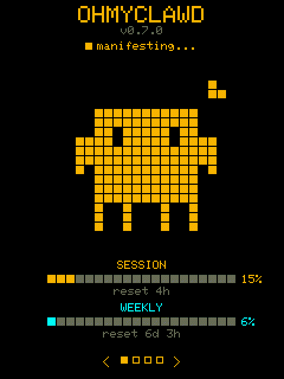

██████ ██ ██ ███ ███ ██ ██ ██ ██ ██ ██ ████ ████ ██ ██ ██ ██ ███████ ██ ████ ██ ████ ██ ██ ██ ██ ██ ██ ██ ██ ██████ ██ ██ ██ ██ ██ ██████ ██ █████ ██ ██ ██████ ██ ██ ██ ██ ██ ██ ██ ██ ██ ██ ███████ ██ █ ██ ██ ██ ██ ██ ██ ██ ██ ███ ██ ██ ██ ██████ ███████ ██ ██ ███ ███ ██████
Claude Code usage monitor for CYD 2.8"

Flash ohmyclawd directly from your browser. No PlatformIO or esptool needed.
Requires Chrome, Edge, or Opera. First flash erases the device.
USB drivers: CH340 / CP210x — Linux: add yourself to dialout group